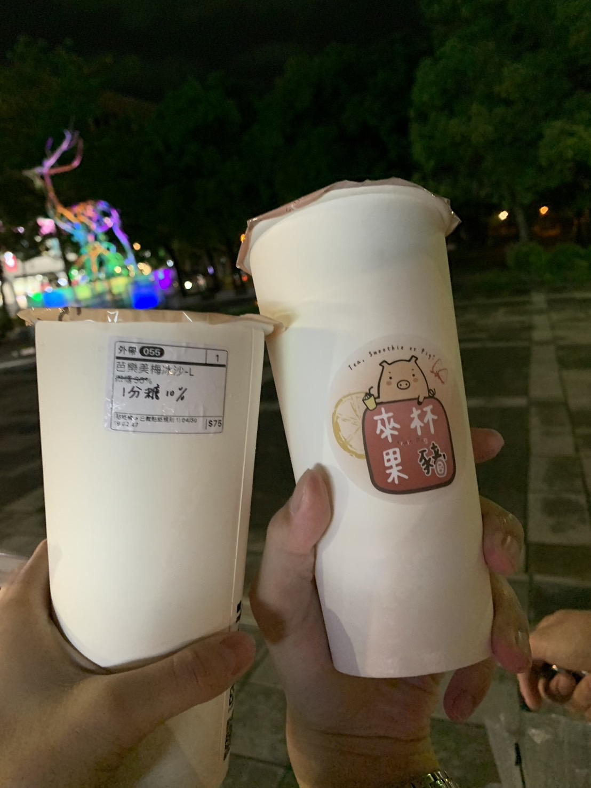

食記 - 來杯果豬

地址：
交通方式：
就在清大機車塔對面，走路過去即可。
心得：
從裝潢就可以感覺到老闆跟老闆娘的用心，小小間但很溫馨。
老闆非常熱情，對飲料有自己的堅持。還記得上次我們只有點一杯，但送上來的時候老闆說他比例不小心錯了，這杯送我們，要再做一杯給我們。於是我們就得到了2杯飲料，甚至一杯原價要$75，而且其實真的喝不出差別，等於我們就這樣多拿了一杯。
有集點活動，似乎每$35可以累積一點，累積10點後可以折抵$35。
飲料我們只有喝過芭樂美梅，正是這杯飲料讓我決定要為他寫一篇 blog。 芭樂美梅是一杯冰沙，味道上很完美的將芭樂與梅子結合，就像在吃甘梅芭樂。口感是很完美的冰沙，不會有過大的冰渣，也不會太快融化。 This is perfect，可以排上我喝過最好喝的飲料第一名。
總而言之，來杯果豬是一間很推薦的飲料店，老闆很客氣，飲料很好喝，特別是冰沙系列。
價位：
我覺得比其他飲料店貴一點點，大概$5~10的價格，奶類都滿貴的，但好像用比較好的牛奶 ( ?